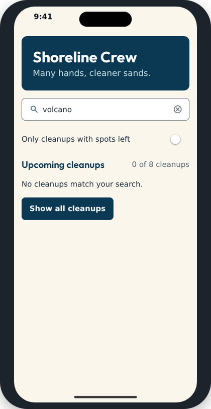
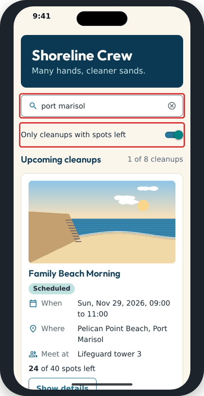

React Native & Expo · Part 1 · Session 6 of 26 · 3 hours
Session 6
Touch and Input
The app starts listening to fingers.
Today
Three hours, one lesson
| 0:00 | Warm-up: Lesson 2.3, retrieved |
| 0:10 | 2.4 The check-in table and the tide |
| 0:20 | Pressable: demo, then lab Task 1 |
| 0:55 | Text, keyboard and switch: demo |
| 1:10 | Break (10 min) |
| 1:20 | Lab Tasks 2 and 3 |
| 1:40 | Project: Steps 1 to 6 together |
| 2:50 | Exit ticket, homework, what to bring next time |
LABS Lab files are in
labs/module-06. Work in starter/, never the solution.Warm-up · 4 minutes, no notes
Lesson 2.3, retrieved
- An expo-image from the API has
sourceandcontentFitbut no size. What do volunteers see, and what fixes it? - Icon's table has
date: 'calendar'. tsc prints nothing. What is wrong? - A detail screen sits under a header bar. Which edges does its Screen touch?
WHY On paper first. Then we answer out loud.
2.4
Touch and Input
Every mistake today is a web habit that works with a mouse.
2.4 · Welcome
From clicks to fingers
- A finger is wide, covers what it touches, has no hover
- Controls come almost bare: no look, no border
- The keyboard is part of the screen
- Ask for every control: how does it feel under a thumb?
2.4 · Mental model
The check-in table on the beach
- Hand lands on the clipboard: onPressIn, the organizer looks up
- Signs and hands it back: onPress
- Wanders off, pen in the air: slid off, nothing counts
- Holds on to it: onLongPress, "anything else?"
2.4 · Live demo, headless
The lesson's PressLog, pressed and held
npm test -- src/presslog.test.tsx cat presslog.txt
tap: pressIn → pressOut → press long press: pressIn → longPress → pressOut
WHY A handled long press is not also a tap. Sliding off: pressIn, pressOut, nothing else.
2.4 · The project's code
Feedback at the touch
shoreline-crew/src/components/Button.tsx
<Pressable
accessibilityRole="button"
disabled={disabled}
{...rest}
// A function: React Native calls it again with pressed: true while a finger is down
style={({ pressed }) => [
styles.base,
boxes[variant],
pressed && pressedBoxes[variant],
disabled && styles.disabled,
]}
WHY A style function: React Native redraws while a finger is down.
2.4 · Project
Pressed: Sea Teal turns Deep Tide

2.4 · Live demo
onClick on a Pressable
onClick={() => onChangeText('')}
npx tsc --noEmit
npx expo lint
env: load .env.local env: export EXPO_PUBLIC_API_URL
WATCH tsc silent, lint only its env: lines. A tap does nothing. Taps go to onPress.
2.4 · Targets and screen readers
48 to aim at, and a name
- Apple 44 pt, Android 48 dp: the course uses
minHeight: 48 hitSlop={8}: a 32 circle, a 48 target (not in the web preview)accessibilityRole,accessibilityLabel- State with aria-* names:
aria-expanded,disabled
2.4 · The project's code
Show details, for every card
shoreline-crew/src/components/EventCard.tsx
<Button
label={showDetails ? 'Hide details' : 'Show details'}
// A screen reader hears which cleanup, and whether its details are open
accessibilityLabel={`${showDetails ? 'Hide' : 'Show'} details for ${event.title}`}
aria-expanded={showDetails}
onPress={() => setShowDetails((shown) => !shown)}
/>
WHY The label starts with the visible words: voice control still finds it.
2.4 · Guided lab · 15 minutes
Task 1: a button for a finger
labs/module-06/l2_4-touch-and-input/starternpm test: 7 failures.npm run lint: cleanonPressto check in,onLongPressto undo- Role, label,
minHeight: 48, a style function
NEXT Tasks 2 and 3 after the next demo.
2.4 · TextInput
Typing on a phone
value+onChangeText: the new text as a string- No
<label>:accessibilityLabel; a placeholder is not a label inputMode,enterKeyHint,autoCapitalize,autoCorrect- The number keyboard still gives a string
2.4 · Live demo
onChange with event.target.value
npx tsc --noEmit
src/components/SearchField.tsx:22:43 - error TS18048: 'event.target' is possibly 'undefined'. src/components/SearchField.tsx:22:56 - error TS2551: Property 'value' does not exist on type 'number | ReactNativeElement'. Did you mean 'valueOf'? Found 2 errors in the same file, starting at: src/components/SearchField.tsx:22
WHY target is a native view, not an input. onChangeText.
2.4 · Mental model
The tide comes in
- The keyboard rolls over the lower half of the screen
- Out again: the return key, scrolling, Keyboard.dismiss()
- Default
'never': the first tap only closes the keyboard keyboardShouldPersistTaps="handled": the tap reaches the button
PHONE Only a phone shows a keyboard: try it in Expo Go in Step 6.
2.4 · The project's code
Screen, for every scrolling screen
shoreline-crew/src/components/Screen.tsx
// A tap on a button while the keyboard is open presses the button (and keeps the keyboard) keyboardShouldPersistTaps="handled" // Starting to scroll puts the keyboard away keyboardDismissMode="on-drag"
2.4 · Live demo
A Switch with onChange
npx tsc --noEmit
src/components/SwitchRow.tsx:20:9 - error TS2322: Type '(value: boolean) => void' is not assignable to type '(event: Readonly<{ bubbles: boolean | undefined; cancelable: boolean | undefined; currentTarget: number | ReactNativeElement; defaultPrevented: boolean | undefined; ... 11 more ...; type: string | undefined; }>) => void | Promise<...>'.
Types of parameters 'value' and 'event' are incompatible.
WHY Read one line: parameters 'value' and 'event'. Use onValueChange.
2.4 · Exercise 3
The wrong Button
npx tsc --noEmit
src/app/index.tsx:90:19 - error TS2322: Type '{ label: string; variant: string; onPress: () => void; }' is not assignable to type 'IntrinsicAttributes & Omit<ButtonProps, "ref"> & { ref?: Ref<ReactNativeElement | TouchableNativeFeedback> | undefined; }'.
Property 'label' does not exist on type 'IntrinsicAttributes & Omit<ButtonProps, "ref"> & { ref?: Ref<ReactNativeElement | TouchableNativeFeedback> | undefined; }'.
90 <Button label="Show all cleanups" variant="primary" onPress={showAll} />
~~~~~
WHY TouchableNativeFeedback: React Native's own Button, which wants a title.
10
Break
Back at 1:20. Start the API and Metro.
2.4 · Guided lab · 20 minutes
Tasks 2 and 3: the desk
- Task 2:
onChangeText,inputMode="numeric", parseBags - Task 3:
onValueChange, then the scroll view's taps - Done:
Tests: 7 passed, 7 total - typecheck and lint print nothing
DEBRIEF Fill the board: web habit → phone.
2.4 · Controls
What React Native has built in
- Pressable (and a basic Button), Switch, TextInput
- ActivityIndicator, RefreshControl: Lesson 3.1
- Alert.alert, Modal and modal routes: Lessons 4.2, 4.3
- Slider, date picker, dropdown: community packages
2.4 · The project's code
Derived, not stored
shoreline-crew/src/app/index.tsx
const cards = load.status === 'loaded' ? load.events .map((event) => ({ event, site: load.sites.find((site) => site.id === event.siteId) })) .filter(({ event, site }) => matchesSearch(event, site, query)) .filter(({ event }) => !onlyOpen || getAvailability(event).kind === 'open') : [];
WHY Computed on every render. The React Compiler: no useMemo.
2.4 · Project
Search as you type

2.4 · Project
Show details, open

2.4 · Project · 70 minutes
Shoreline Crew Listens
- Control colors and the Button
- Show details on every card
- SearchField
- SwitchRow
- Filter the Cleanups screen
- Screen's keyboard props, and Expo Go
PROJECT Step 7 (checks, commit) goes home.
2.4 · On your phone
Four checks in Expo Go
- Tap the field: a "search" return key, no capital letter
- Type, then tap clear once: cleared, keyboard still open
- Type, press return: the keyboard closes
- Flip the switch: Apple's or Material's, Sea Teal when on
HEDGE The course could not run a phone while it was checked: React Native's documentation describes this.
Wrap-up · 4 minutes
Exit ticket
- Two web habits that fail on a phone, and what replaces each
- Hold Show details, then lift: does onPress run?
- What does "handled" on keyboardShouldPersistTaps change?
WHY No notes. Workbook Exit Ticket box or a sticky note on the way out.
Before Session 7
Homework and bring list
- Step 7; the phone check; Exercises 1 and 2; the quiz; the journal
- Lab: the tasks you did not finish
- Dark mode on your phone: what still looks like daytime?
- Bring: the course folder (committed), your phone, the workbook
NEXT Session 7: Responsive, Platform-Specific and Themed UI.